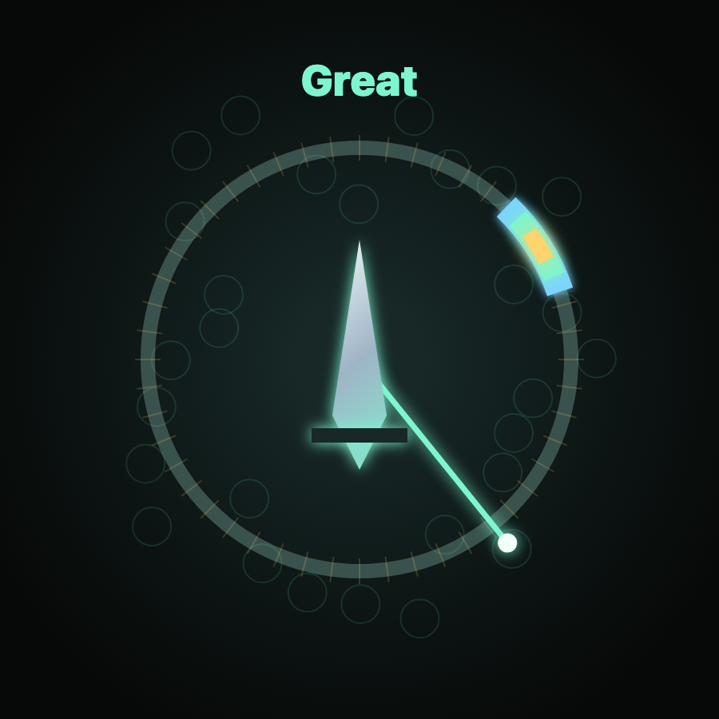
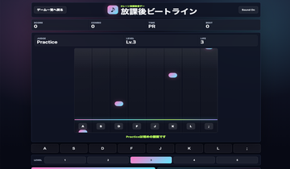

針とゾーンを合わせて刃を鍛える無料ブラウザタイミングゲームです。
タイミングゲーム
クリックやタップのタイミングで判定を狙う、短時間向けの無料ゲームです。
タイミングゲームは、ルールが分かりやすく、数十秒から数分で集中して遊べるのが魅力です。

針とゾーンを合わせて刃を鍛える無料ブラウザタイミングゲームです。

8レーンに流れるノーツを叩く無料ブラウザリズムゲームです。
目的や端末に合わせて、ほかの無料ブラウザゲーム入口も確認できます。